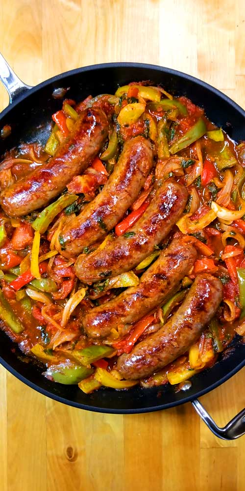

Italian Sausages, Peppers and Onions

Description
This simple and delicious one-pan sausage and peppers recipe has been used in our family for years and years now. Serve in a roll, or use as a topping for pizza or pasta. For an extra kick, try using 1/2 sweet Italian sausage and 1/2 hot sausage!
Ingredients
- Italian Sausage
- Butter
- Onions
- Garlic
- Bell Peppers
- Wine
Steps
- Cook sausage in a large skillet over medium heat until brown on all sides, 5 to 7 minutes. Remove from skillet, and slice.
- Melt butter in the same skillet. Stir in onions and garlic, and cook 2 to 3 minutes. Mix in bell peppers, season with basil and oregano, and stir in 1/4 cup wine. Continue to cook and stir until peppers and onions are tender, 5 to 7 minutes.
- Return sausage slices to the skillet. Reduce heat to low, cover, and simmer 15 minutes, or until sausage is heated through, adding more wine if needed.
Go back to Menu